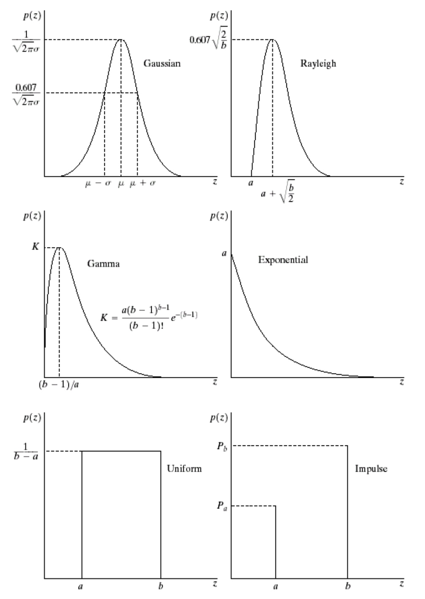

chapter2
图像取样和量化 Image Sampling and Quantization
大多数传感器的输出是连续的电压波形(图像)，为了产生一 幅数字图像，需要把连续的感知数据转换为数字形式。这就包含 了两种数字化处理，取样(时空域)(坐标值数字化)和量化(光色强度等)(幅值数字化)
双线性插值 upsampling--bilinear interpolation
人眼对灰度分辨率的敏感程度和图像内容的复杂程度相关
像素间的关系spatial relationships between pixels
4-neighbors: (x-1, y) , (x+1, y), (x, y-1), (x, y+1)
diagonal neighbors: (x-1, y-1) , (x+1, y-1), (x-1, y+1), (x+1, y+1)
8-neighbors = diagonal-neighbors + 4-neighbors
邻接性
(a)4邻接:如果点q在N4(P)中，数值在V中，则q和p是4邻接的;
(b)8邻接:如果点q在N8(P)中，数值在V中，则q和p是8邻接的;
(c)m邻接(混合邻接):满足下列条件的任一个，则具有V中数值 的p和q是m连接的。
(i)q在中N4(P) (ii)q在ND(P)中，且集合N4(P)∩N4(Q)中没有V值的像素
Mathematical Tools Used in DIP
Linear operator
H(af+bg) = aH(f) + bH(g)
Bit plane
Spatial Operation
- Single-pixel operations
- Neighborhoodoperations
chapter3 Spatial filtering
Grey Level Transformation
negative image
s = (L-1) - r
Log transform
s = clog(1+r)
Gamma transform
s = cry
Piece-wise linear transform(分段线性变换)
Bit plane slice
去除低位 bit plane 相当于去噪
以上灰值处理方法均可用于图像增强，提升亮暗部效果
Histogram Processing
直方图均衡化”方法试图使处理后输出图 像的信息熵尽可能大
问题 灰度跳跃
Spatial filtering
- Spatial correlation
- Spatial convolution (旋转180后的correlation)
Smoothing Spatial Filter
- Averaging filter
- Median filter
- preserve edge
- remove impluse noise
- create flats
Sharpening Spatial Filter
- 一阶微分产生较“宽”的边界，二阶微分产生较“细”的 边界;
- 二阶微分处理对细节有较强的响应，如细线和孤立点;
- 一阶微分对阶梯状的灰度变化有较强的响应;
- 二阶微分在处理阶梯状灰度变化时产生双响应
- 如果灰度的变化相似，二阶微分对线的反应比对阶梯强， 对点的反应比对线强。
Laplacian filter
High-boost Filter:
1. Blur the original image
2. Subtract the blurred image from the original (the resulting
difference is called mask
\[ g_{mask}(x,y) = f(x,y) - \overline{f}(x,y) \]
3. Add the mask to the original
\[ g(x,y) = f(x,y) + kg_{mask}(x,y)\]
k > 1: high-boost filter
chapter4 Image Enhancement in the quency Domain
chapter5 Image Restoration
图像复原: 利用退化现象和噪声干扰的某些先验知识来重建或恢复 被干扰和退化的图像, 尽可能的恢复图像的原貌
Model of degraded image
\[g(x, y) = h(x, y) * f(x, y) + \eta(x, y)\]
\(f(x, y)\)-“Original”Image
\(h(x, y)\)-Degradation Function
\(\eta(x, y)\)-Additive Noise
\(g(x, y)\)-Degraded Image
Noise Model
- Gaussian noise \(p(z) = \frac{1}{\sqrt{2\pi}\sigma}e^{-(z-\mu)^2/2\sigma^2}\)
- Rayleigh noise
- Gamma noise
- Exponential Noise
- Uniform Noise
- Impluse Noise (salt and pepper)
- Periodic Noise

噪声模型估计
截取一小部分具有恒定灰度的区域，估计PDF，与模型比对
Restoration
- Arithmetic Mean Filter: 高斯噪声，均匀噪声
- Geometric Mean Filter: 高斯噪声，均匀噪声
- Harmonic mean filter: 高斯噪声，盐噪声
- Contra-harmonic mean filter
- Q > 0: 椒噪声
- Q < 0: 盐噪声
- Q = 0: arithmetic mean filter
- Q = -1: harmonic mean filter
- Order-statistic filters
- Median filter: 脉冲噪声
- Max Filter: 椒噪声
- Min filter: 盐噪声
- Midpoint filter: 椒盐噪声、高斯噪声、均匀噪声
- Alpha-trimmed mean (ATM) filter: 高斯和椒盐噪声 > 去掉最高，最低，中间取平均值
- Adaptive Filters
- band-reject
chapter6 Color Image Processing
RGB彩色模型 vs HSI彩色模型
这个模型是以彩色的色调(Hue)、饱和度 (Saturation)以及强度(Intensity)为基础的。这个模型更适合人 对颜色的解释
RGB to HSI
\[ B \le G,H = \theta, B > G, H = 360 - \theta\]
\[ \theta = arccos{\frac{\frac{1}{2}[(R-G)+(R-B)]}{[(R-G)^2+(R-B)(G-B)]^{1/2}}}\]
\[ S = 1 - \frac{3}{R+G+B}[min(R,G,B)]\]
\[ I = \frac{1}{3}(R+G+B)\]
HSI to RGB
图像压缩
信息熵 \(H(x) = - \sum_{a\in A} p(a)log_2p(a)\)
形态学
获取边缘 \(A-(A\ominus B)\)
opening \(A \circ B = （A \ominus B) \oplus B\) 外轮廓磨得较圆滑, 把细线切断
closing \(A \cdot B = (A \oplus B) \ominus B\) 內凹的角填起成圆弧
指纹图去噪
\((A \circ B) \cdot B\)
image and video compression basic
YUV 格式, 2.03U=B-Y, 1.14V=R-Y